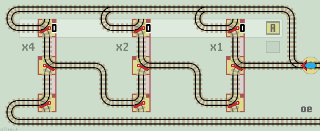
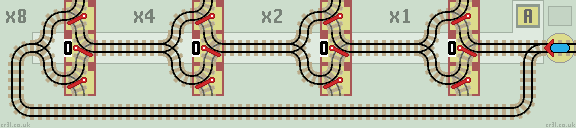

Functions using Flip-flops
We can construct a flip-flop using two linked lazy points and a sprung point.
Trains arriving on the main line (from the right) pass up to an inverter loop and 'flip' (invert) the flip-flop. They then exit via the lower lazy point on alternating branch lines.

|
| Click layout to pause/run train | Click start circle to reset train |
Adam Chalcraft and Michael Greene in their paper 'Train Sets' name the flip-flop circuit as a 'Distributor'.
Also see equivalent circuits and Duplo page for a flip-flop Duplo layout.
In theory, all functions can be constructed using flip-flops alone, but this can require many more points. Also, as each flip-flop requires 3 points to build, they are not the most efficient way to create many functions.
Flip-Flop Count Up (increment)
Connecting flip-flops in series creates a Count Up (increment) circuit. This has the same operation as Count Up function. The layout is similar to an Inverter function.

|
| Click layout to pause/run train | Click points to switch 0/1 | Click start circle to reset train/points |
The train increments the counter and returns back along the same track. The counter rolls over from 7 (111) to 0 (000).
Compact Flip-Flop Count Up (increment)
A more compact flip-flop can be built using three linked lazy points. The central point is drawn reflected.
This counter is shown with an overflow line instead of rolling over.
| 
|
| Click layout to pause/run train | Click points to switch 0/1 | Click start circle to reset train/points |
Compact Flip-Flop Inverter
This layout inverts register A. The flip-flops are shown without the short vertical track between lazy points, which remain linked together. Also see Subtract function.
| 
|
| Click layout to pause/run train | Click points to switch 0/1 | Click start circle to reset train/points |